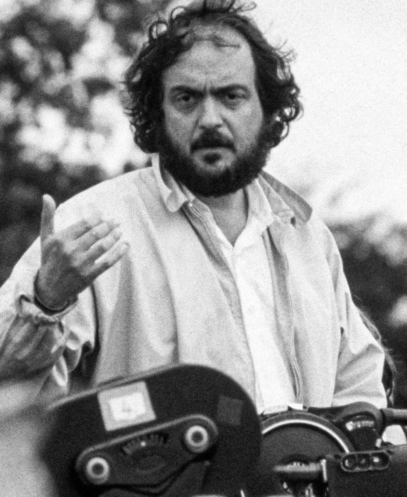
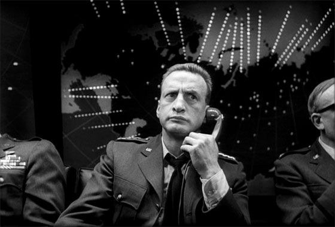
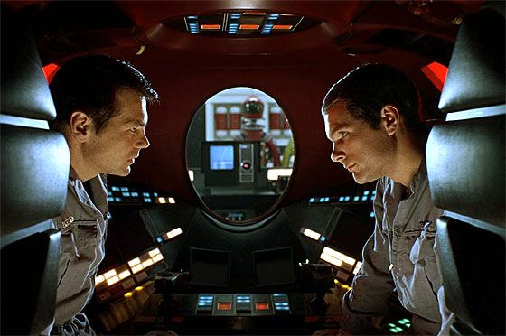
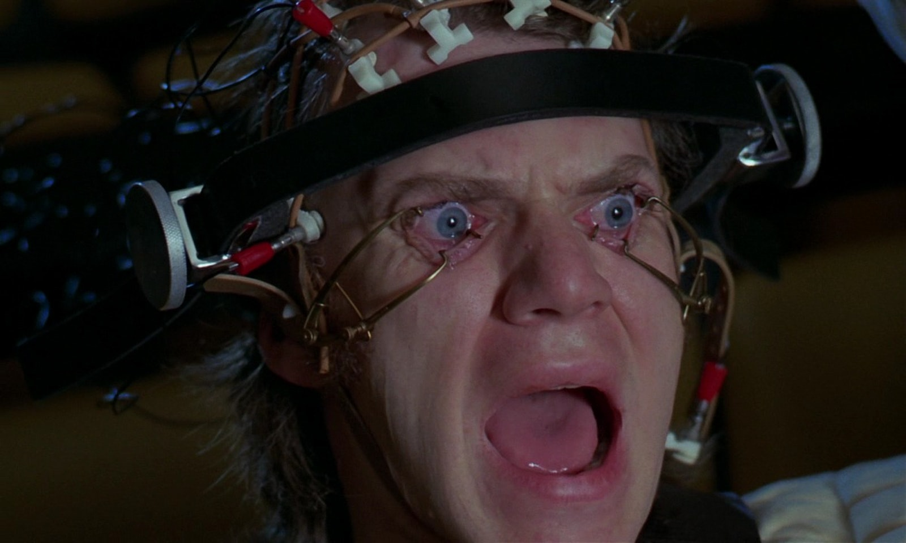

(Nueva York, 1928 - Harpenden, Reino Unido, 1999) Director de cine estadounidense. Stanley Kubrick fue, ante todo, un perfeccionista cuya minuciosidad le otorgó fama de maniático, un tenaz jugador de ajedrez que se había ganado la vida como tal y como fotógrafo de la revista Look (desde los diecisiete años) antes de poner sus aptitudes al servicio de la imagen en movimiento, campo en el que su versátil e inagotable talento le permitiría abordar variados géneros y dejar en todos ellos innegables obras maestras.
Tras unos fulgurantes inicios en los territorios del cine negro de los años 50, la filmografía de Kubrick siempre se desplazó con facilidad de una temática a otra, de un tono a otro: tan pronto asumía enérgicamente los mecanismos de relojería del mejor cine policíaco (Atraco perfecto, 1956), convirtiéndolos en un personal discurso sobre el azar y el juego, como abordaba ambientes tan dispares como pueden ser el del peplum (la melodramática Espartaco, 1960, soberbiamente interpretada por Kirk Douglas) o el de la sátira y la farsa política (¿Teléfono rojo? Volamos hacia Moscú, 1964). No vaciló tampoco en recurrir a la adaptación de clásicos literarios para construir universos propios: la mórbida Lolita (1962), basada en la Lolita de Vladimir Nabokov, es una densa recreación del mundo de provincias estadounidense formidablemente servida por los magníficos James Mason, Sue Lyon y Shelley Winters.
Kubrick no gozó del aplauso unánime del público y de la crítica hasta el estreno de Senderos de gloria (1957), filme antibelicista en el que describió un célebre caso de fusilamientos por supuesta deserción durante la Primera Guerra Mundial. Ya en esta primera obra maestra se reveló como un especialista en aportar jugosas estrategias visuales a géneros en apariencia agotados. En Senderos de gloria, el alegato contra el autoritarismo y el absurdo de la guerra impregna hasta el más mínimo de los detalles de puesta en escena, mientras la rigidez y geometría de los movimientos de cámara transmiten la atmósfera implacable de la maquinaria de guerra y la burocracia militar.
A lo largo de su trayectoria y con muchos años de separación, otros dos filmes retomarían la temática antimilitarista: ¿Teléfono rojo? Volamos hacia Moscú (1964) y La chaqueta metálica (1987). Un tono brutalmente sarcástico caracteriza ¿Teléfono rojo? Volamos hacia Moscú, juzgada la mejor película jamás filmada sobre la guerra fría. En ella el general de las fuerzas aéreas estadounidense Jack D. Ripper, obsesionado con la idea de una conspiración comunista, da la orden de lanzar bombas atómicas sobre objetivos soviéticos a las escuadrillas en vuelo. El presidente de los Estados Unidos reúne a sus consejeros para averiguar qué ha ocurrido, y resulta que la decisión tomada por Ripper es irrevocable; la base comandada por el enloquecido general está sellada y no es posible comunicarse con ella.

Sólo queda una opción: invitar al embajador de la URSS al Estado Mayor y contarle lo ocurrido, para que se ponga en contacto con su presidente y encontrar una solución entre todos. La sorpresa es grande cuando el embajador soviético les revela que, en caso de un ataque estadounidense, se activaría el «Arma definitiva», un ingenio que aniquilaría la vida en el planeta, sin que nadie pueda hacer nada para evitarlo. Aparte del consabido talento de Peter Sellers (enorme en sus triple papel de capitán Mandrake, presidente norteamericano y embajador ruso), la baza del filme fue sin duda su excelente guión y el acertado tratamiento del director, que rebajó hasta lo grotesco personajes y situaciones y exhibió un humor negro tan lúcido como desesperanzado.
Curiosamente, La chaqueta metálica (1987) invirtió la técnica de Senderos de gloria y convirtió el fluido y vacilante movimiento de la steadycam en la mejor representación del caos moral y humano del conflicto de Vietnam. Siempre innovador e inquieto experimentador técnico, Kubrick ya había aplicado con singular fortuna las posibilidades de la steadycam en El resplandor (1980), su personal incursión en el cine de terror y en la novelística de Stephen King. En un impresionante alarde técnico y visual, el director convirtió la psicosis de su protagonista, Jack Nicholson, en un laberíntico trazado de planos-secuencia en perpetuo movimiento por corredores vacíos y jardines nevados, imagen-símbolo de una mente desprovista de puntos de anclaje fijos con la realidad que la rodea.
Las aportaciones más relevantes de su trayectoria, sin embargo, iban a darse en el terreno de la ciencia ficción. En 1968 asombró al mundo con 2001: Una odisea del espacio, inspirada en un relato corto del escritor Arthur C. Clarke, coautor con Kubrick del guión. El estreno de esta película fue un acontecimiento de primera magnitud debido al innovador enfoque dado al género y a su revolucionaria concepción visual. El cineasta dio rienda suelta a su inigualable sentido estético en el marco de una historia de fuerte contenido metafísico y especulativo, que destacó además por sus perfectos efectos especiales y la poderosa carga simbólica de algunas de sus imágenes.
Con Una odisea del espacio, Kubrick prácticamente reinventó la ciencia ficción cinematográfica. Tras varias décadas de reclusión en películas de bajo presupuesto y series B, la fantasía futurista encontró con este filme su lugar para el gran público y para los grandes despliegues de medios, presupuesto y efectos especiales. 2001: Una odisea del espacio fue la piedra angular que abrió el camino para la entrada de la ciencia ficción en la serie A, jalonada por títulos hoy clásicos como La guerra de las galaxias (1977), de George Lucas, Alien (1979), de Ridley Scott, o Terminator (1984), de James Cameron.

Pero 2001: Una odisea del espacio ofrece no sólo una lujosísima producción con asombrosos efectos especiales (la "danza" de las naves espaciales al compás de El Danubio azul de Johann Strauss, el extraordinario diseño de producción de los interiores de la nave), sino que, desde el punto de vista del contenido, se presenta como una epopeya filosófica y moral que pretende ser la versión adulta de los cuentos de monstruos infantiles: la parábola de una humanidad bajo el peligro del cáncer tecnológico, la voluntad del hombre de viajar hasta el origen, el principio y el fin de la civilización unidos en una sola imagen... La grandiosidad del filme atestigua, como pocas veces, el singular talento visual de su realizador y su compleja y ciertamente megalómana sensibilidad como artista.
Mucho se ha especulado sobre el enigmático significado de esta obra maestra, por más que, tal como apuntan el propio Stanley Kubrick y Arthur C. Clarke en la edición en libro del guión, una de las principales ideas que les movió en este proyecto conjunto era la de abrir un interrogante sobre el origen y la naturaleza de la inteligencia. El asombroso rigor científico fue debido a un intenso trabajo de documentación en el que se consultó a la NASA, General Electric, PanAm e IBM. De todo ello tomó buena nota Douglas Trumbull, el responsable de los revolucionarios efectos especiales. Por lo que respecta a los efectos fotográficos especiales premiados con un Oscar, y que incluían las front-projections de la primera parte o la secuencia de Bowman cruzando el anillo de asteroides, fueron realizados por cuatro equipos dirigidos personalmente por Kubrick, quien también fue el responsable de su diseño.
Inmediatamente después de Una odisea del espacio, Kubrick se embarcó en un nuevo proyecto futurista que completaría y estrenaría tres años más tarde: La naranja mecánica (1971), una descarnada reflexión sobre la violencia individual y colectiva que partió de la novela homónima de Anthony Burgess. Censurada durante mucho tiempo en múltiples países, La naranja mecánica se sitúa en un futuro distópico, en una Inglaterra desolada y devastada por la violencia. Alex, miembro de una violenta banda juvenil, es arrestado por violación y asesinato. A cambio de la conmutación de su condena, se le propone que participe en un plan experimental de reinserción diseñado por el gobierno: el Tratamiento Ludovico, que resulta ser, en síntesis, una combinación de psicología conductista y lavado de cerebro. Cuando finalmente Alex es devuelto a la sociedad, completamente curado de sus incontrolables impulsos violentos, o más bien incapaz de tenerlos, encuentra en el exterior una violencia soterrada aún mayor, que se manifestará en las venganzas que sobre él ejercerán algunas de sus ex víctimas y ex compañeros de correrías, ahora convertidos en sus verdugos.

La segunda incursión de Kubrick en la ciencia ficción no pudo ser más polémica y controvertida (de hecho, tanto como lo había sido la novela homónima de Anthony Burgess, publicada en 1962). El arriesgado panorama ético y moral que se despliega con singular crudeza a lo largo del metraje convierten La naranja mecánica, más allá de cualquier otra valoración, en un auténtico fenómeno sociológico para la cultura de su tiempo, por su carácter de alegoría política (los jóvenes hablan en un argot que aglutina palabras rusas e inglesas) y su denuncia de la brutalidad inherente a las pretensiones cívicas de nuestra sociedad contemporánea. La banda sonora se hizo muy popular debido a los arreglos electrónicos de Walter Carlos, pero también puede oírse música de Henry Purcell, Rossini, Beethoven y Rimski-Korsakov, entre otros, y la canción Singin' in the Rain.
Kubrick abordó siempre sus proyectos con la actitud de un demiurgo, buscando el control absoluto de todas las etapas del proceso (la producción, el guión, la fotografía, la música, el montaje, el sonido... y aun las características técnicas de las salas en que habían de proyectarse sus obras). Por ello, sus rodajes fueron tradicionalmente los más densos, complejos y, con frecuencia, largos del cine contemporáneo: un claro ejemplo fue la oscarizada Barry Lyndon (1975). La preparación de este filme de época protagonizado por Ryan O'Neal supuso una exhaustiva investigación y documentación sobre el siglo XVIII para reproducir con absoluta fidelidad el ambiente del período. El reto consistió en filmar aprovechando al máximo la luz natural, llegando incluso a utilizar velas como única fuente de iluminación.
Después de las ya citadas El resplandor (1980) y La chaqueta metálica (1987), Kubrick emprendió en 1997 el rodaje de Eyes wide shut (1999), un drama erótico-conyugal sobre las intimidades de una pareja aparentemente perfecta. Los personajes protagonistas, Bill y Alice Harford, parecen en efecto constituir el matrimonio ideal: jóvenes, bien parecidos y triunfadores, la sombra de la infidelidad, que asoma por doquiera en su entorno personal, no llega a turbar la armonía de su relación. Sin embargo, tras regresar de una fiesta donde ambos han recibido insinuaciones por parte de terceras personas, Alice confiesa a su marido un suceso acaecido hace unos años que rompe la idílica imagen. Bill, profundamente afectado y resentido con su esposa, abandona la casa e inicia un extraño periplo nocturno durante el que una serie de experiencias vitales, cada vez más oníricas y amenazantes, le obliga a replantearse sus propias convicciones morales.
Basada en una novela corta del escritor y dramaturgo austríaco Arthur Schnitzler, Eyes wide shut acabaría por convertirse en el testamento fílmico de Stanley Kubrick. Cuando se anunció el proyecto, que suponía la primera colaboración del director con dos de las estrellas más relevantes de Hollywood, Tom Cruise y Nicole Kidman (matrimonio en la vida real), la expectación alcanzó límites insospechados, expectación que se potenció todavía más a medida que el rodaje se alargaba (acabó durando más de dos años) y fueron apareciendo en los periódicos y la televisión filtraciones acerca de pretendidas tensiones entre los actores y el director y la supuesta elevada carga erótica del filme.
Pocos meses antes del previsto para el estreno, la noticia del fallecimiento de Kubrick conmocionó el mundo del cine y aumentó, aún más si cabe, la leyenda de la película, sobre cuyo montaje final recayeron sospechas al no saberse a ciencia cierta si el director había sido capaz de finalizarlo antes de su óbito. Tanto Cruise como Kidman emplearon toda su influencia para que el estudio no realizara corte alguno, y Eyes wide shut pudo estrenarse al fin, para quedar por siempre unida al recuerdo de una de las personalidades más geniales del séptimo arte.